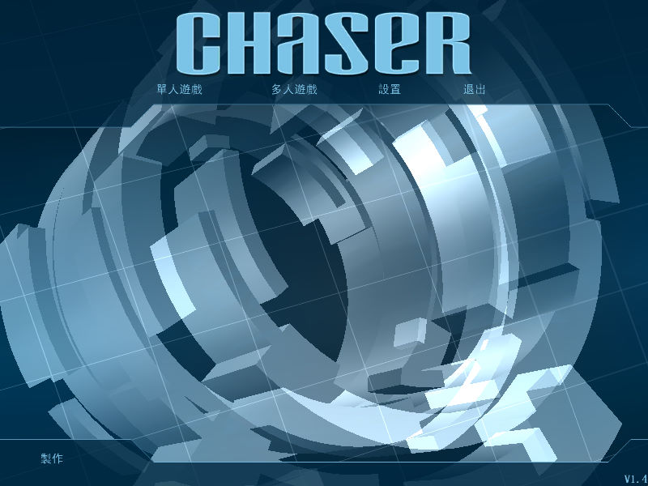
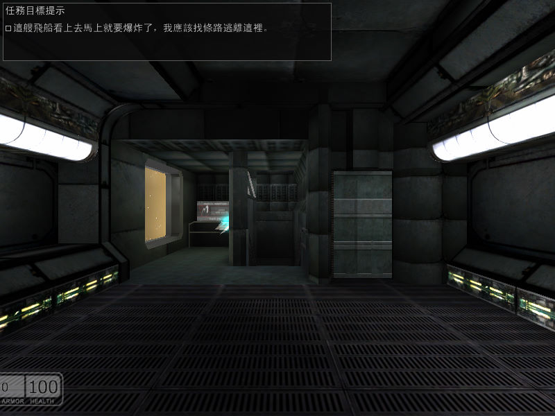

名稱：重裝上陣：火力全開／獵人 (Chaser，中文版)
簡介：Cauldron 2003年出品的第一人稱射擊遊戲，由JoWooD代理發行，台灣由遊戲天堂中文
化並代理發行，大陸則由東方娛動簡中化並代理發行 [待補]。


保護：英文1.47版為光碟SecuROM+SVKP，中文版為光碟
備註：繁中版與簡中版均為1.4版。
備註：英文1.47版只能在XP SP1安裝，否則會出現math64.dll的錯誤，安裝時也會進行光碟
SecuROM與SVKP的保護檢驗（很麻煩，不如使用GOG版安裝檔）。